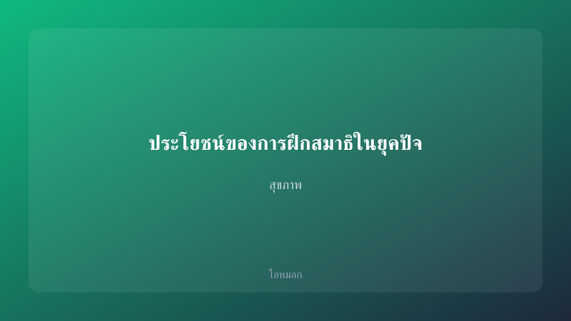
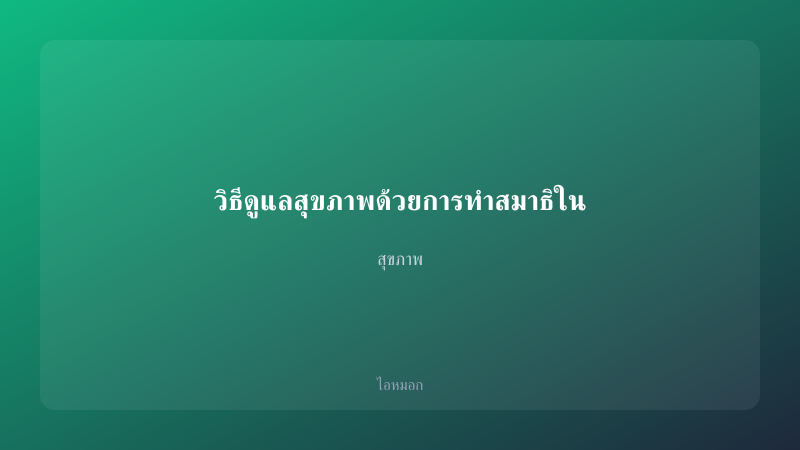
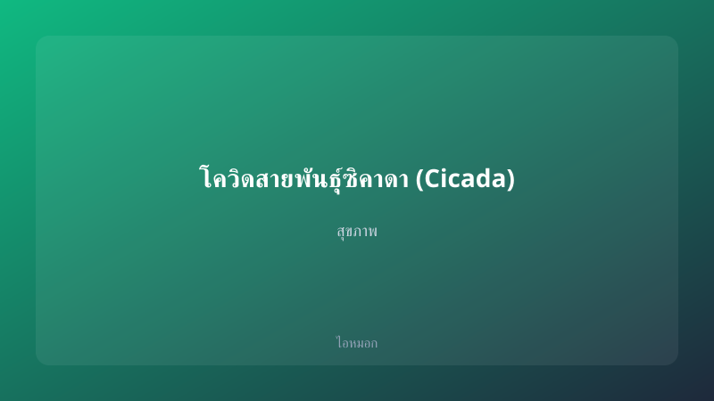
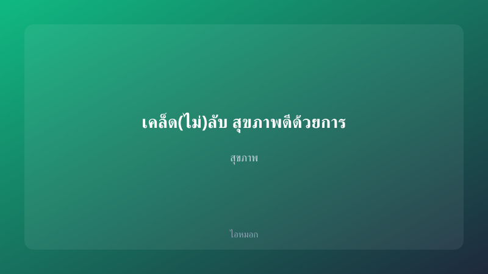

บทความล่าสุด (8 บทความ)
สาเหตุที่คนไทยนิยมทานผักชีฝรั่งในอาหารเพื่อสุขภาพ
ทำไมคนไทยถึงชอบใส่ผักชีฝรั่งในอาหารสุขภาพ? นี่คือคำถามที่หลายคนอาจสงสัย เพราะจริงๆ แล้ว ผักชีฝรั่งเป็นพืชที่มี…

วิถีชีวิตคนเมือง กับการออกกำลังกายแบบใหม่
การออกกำลังกายเป็นสิ่งสำคัญในชีวิตประจำวันของเรานะ โดยเฉพาะในเมืองที่มีความเจริญและเต็มไปด้วยเทคโนโลยี แต่ทำไม…

ประโยชน์ของการฝึกสมาธิในยุคปัจจุบัน
ในยุคที่เราต้องเผชิญกับความเครียดและแรงกดดันต่างๆ มากมาย การฝึกสมาธิอาจดูเหมือนเป็นวิธีการแก้ปัญหาที่ไม่เข้ากั…

วิธีดูแลสุขภาพด้วยการทำสมาธิในบ้านของคนเมือง
เคยไหม? วันที่รู้สึกเครียดจนหัวใจเต้นแรง หรือวันที่เร่งรีบจนทำให้เราหลงทางกับชีวิต เราอาจจะกำลังเผชิญหน้ากับคว…

โควิดสายพันธุ์ซิคาดา (Cicada) น่ากังวลแค่ไหน และเด็ก ๆ มีความเสี่ยงมากกว่าหรือไม่
สวัสดีครับทุกคน วันนี้ผมมีสิ่งที่น่าสนใจและสำคัญมาเล่าให้ทุกคนฟังเกี่ยวกับ โควิดสายพันธุ์ซิคาดา (Cicada) หรือ …

7 วิธีดูแลสุขภาพที่ทำได้ทุกวัน
สวัสดีค่ะ สาวๆ ที่กำลังมองหาวิธีการดูแลตัวเองแบบง่าย ๆ ที่ทำได้ในชีวิตประจำวันกันอยู่! มาดูกันว่ามีอะไรบ้างที่…

การดูแลสุขภาพด้วยศาสตร์แห่งสมาธิและการหายใจ
การดูแลสุขภาพจิตใจให้แข็งแรงในโลกที่เต็มไปด้วยความเร่งรีบและสิ่งรบกวน นับว่าเป็นสิ่งที่สำคัญไม่แพ้สุขภาพกาย กา…

“เคล็ด(ไม่)ลับ สุขภาพดีด้วยการเดินเล่นในสวน”
สวัสดีจ้า! รู้ไหมว่าการเดินเล่นในสวนมันดีต่อสุขภาพเราขนาดไหน? เพราะเมื่อเราว่างก็สามารถออกไปสูดอากาศบริสุทธิ์แ…